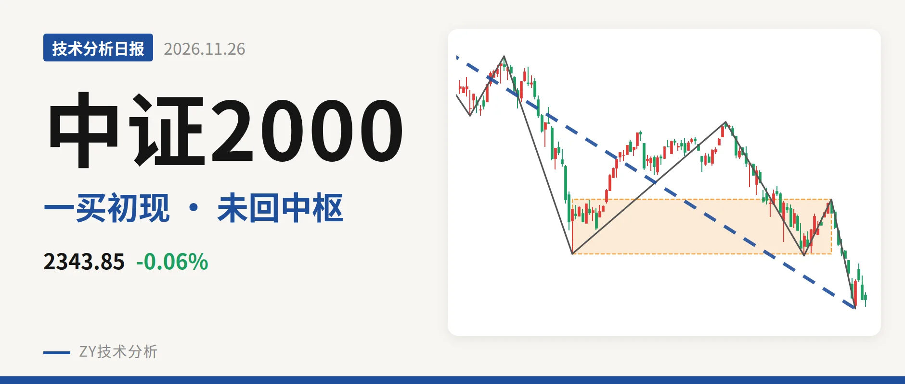
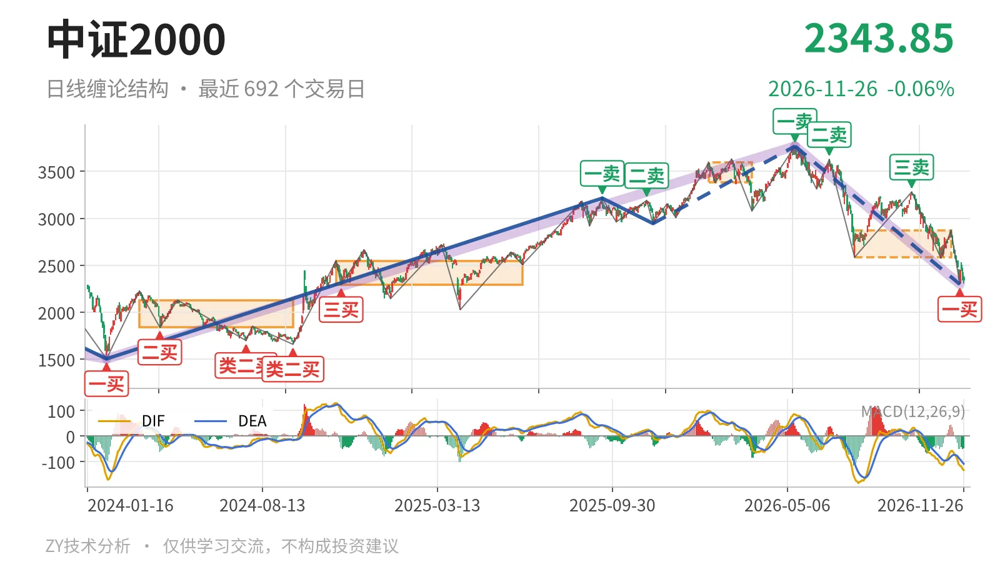
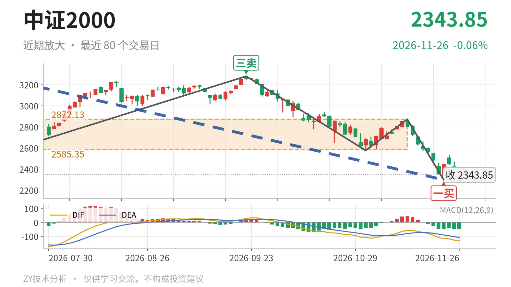

中证2000｜一买反抽，未及2585点中枢下沿

最近日线中枢 2585.35—2872.13点，收盘位于中枢之下
一句话：日线一买引发反抽，距2585点尚远，下跌段未扭转。
📉 走势结构：下跌段未结束，一买只改变笔级别节奏
中证2000仍处在5月14日至11月23日的日线下跌段中，该下跌段没有结束，当前回升先按背驰后的反抽理解。2024年2月6日至2026年5月14日的上涨段从1503.44点涨至3768.08点，涨幅约150.6%；5月14日形成一卖3768.08点后转入下跌段，至11月23日低见2297.27点，跌幅约39.0%。日线上这段下跌还在延续，11月23日的日线笔一买2297.27点只改变笔级别节奏，没有破坏日线下跌段。

🧭 中枢与位置：中枢下移，收盘低于下沿
最近的日线笔中枢在7月21日至11月12日，区间2585.35—2872.13点，最新收盘2343.85点低于下沿约9.3%。更早的1月26日至3月23日中枢位于3381.36—3593.19点，两段相比中枢明显下移，反弹高点也随之一个比一个低。更大级别线段中枢2022年4月27日至2023年6月19日为2085.97—2437.36点，最新价仍在其内部，略高于中轴2261.66点，下方存在结构承接，但日线层面仍在最近中枢下方。
📍 买卖点：11月23日一买成立，未成笔前仍有限
11月23日的一买2297.27点同时是线段级别类二买，所在笔11月12日至11月23日已经结束。其后11月24日至26日只有3根K线，最高2533.82点、最低2307.90点，尚未形成反向日线笔；若后续下破2297.27点，这个一买就只对应更小级别。上方卖点依次为5月14日一卖3768.08点、6月23日二卖3626.48点、9月22日三卖3280.29点，一个比一个低。在未重新站上这些位置前，日线仍属下跌结构。

⚖️ 背驰：进入段与离开段“新低不新弱”
关键的背驰比较来自7月21日至11月12日中枢的前后两段下跌。6月23日至7月21日的下跌笔从3626.48点跌至2585.35点，绿柱面积810，DIF低点-164.2；11月12日至11月23日的下跌笔从2872.13点跌至2297.27点，创出中枢下沿新低，但绿柱面积仅137，DIF低点抬至-115.7。价格新低而面积收缩、DIF抬高，属于“新低不新弱”，这是11月23日一买的结构基础。当前日线MACD仍在零轴下，DIF -133.5、DEA -108.8、柱体-49.3，反弹力度不算强。
🔎 关键位置观察：2585点一线是结构分界
未成笔反抽最高2533.82点，没有触碰到最近中枢下沿2585点。若反抽连2585点都回不到，结构上有对7月21日至11月12日中枢形成三卖的风险；下方可观察线段中枢中轴2262点附近和下沿2086点附近的承接。若重新站上2585点并站稳，下跌更可能先转为中枢扩展。整体结构偏弱，原因是日线收盘仍在最近中枢下方、下跌段没有结束；但背驰已经出现，短线处于一买后的反抽观察阶段。
⚠️ 本文为基于公开行情数据的缠论技术结构记录，由程序自动计算并生成，仅供学习交流，不构成任何投资建议。市场有风险，投资需谨慎。